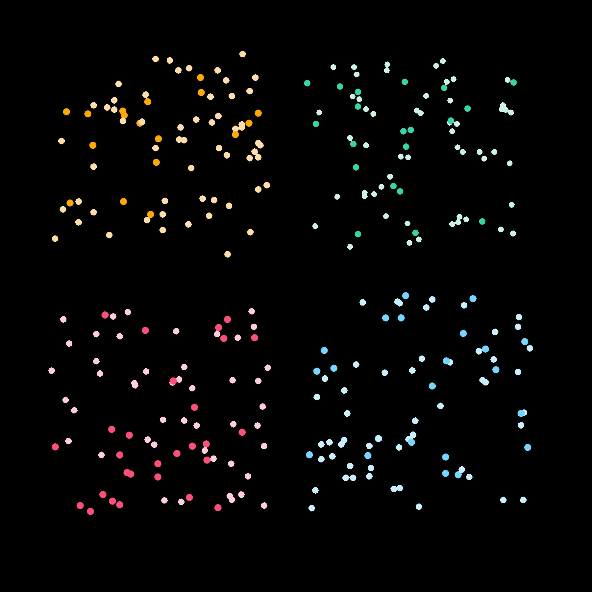

- Digital
- These four images were produced running a Python script that draws 75 random dots, with the chance of the darker color 26% and the chance of the lighter color 74%
- CFO of Google
- Previous advisor to US Treasury
- Was one of the most powerful women on Wall Street in 2015 -
Two time breast cancer survivor, working through her treatment both times -
https://www.businessinsider.com/ruth-porat-google-alphabet-biography-2016-7